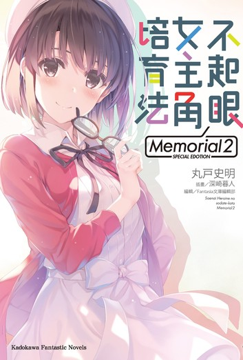

| 喜歡的版本 | 作品 | 劇情大綱 | 推薦原因 | |
|---|---|---|---|---|
| 輕小說 | 歡迎來到實力至上主義的教室 | 幾乎百分之百實現升學與就業的全國首屈一指的名校──高度育成高中。 這間學校使用了最先進的設備，而且每個月還會給予學生價值10萬日元的點數，也允許自由選擇髮型和攜帶私人物品。 然而其真面目卻是—— 唯有優秀者才能享受優待的實力至上主義學校。 因為某些理由而在入學考試中故意放水後，主人公「綾小路清隆」被分配到聚集了問題學生的最底層班級D班，由此展開的校園鬥智故事。 |
不管是題材新穎，角色塑造，畫風，劇情各方面都非常引我入勝的一部作品，可以說是我最喜歡的作品也不為過。 | |
| 動畫 | 不起眼女主角培育法 |  | 春假時，為了購買動畫藍光片而打工的御宅族安藝倫也，在開滿櫻花的坡道上邂逅一位少女，幫她撿一頂被風吹走的貝雷帽。
於是有了以該少女為女主角製作同人遊戲的構想。一週後才知道，少女是他的同班同學加藤惠。 為了製作同人遊戲，安藝倫也還要說服同年級美術部的繪畫高手澤村·史賓瑟·英梨梨，以及優等生學姐霞之丘詩羽和加藤惠共組遊戲社團，開始同人遊戲的製作。 |
女主角非常吸引我，是我在各作品中最喜歡的女角色。 這部作品雖然不到各方面都讓我喜歡，但靠著女主角的發揮和最後的結局，成為我推薦這部的原因。 |
| 漫畫 | 食戟之靈 | 作品的舞台是位於東京內的一所料理名校「遠月學園」。 國中畢業後為了繼承家業「幸平餐館」，主角幸平創真，每天總是以料理人的父親為目標，不斷磨練自己的廚藝，因為父親的指示來到遠月學園，以特別編入生就讀。 在畢業率不到百分之十的「遠月學園」裏，來自各地廚藝精銳的年輕人彼此較勁，是互相爭奪料理頂點的戰場。 為了擊敗對手，互相賭上等價的賭注，用料理進行的單對單決鬥，就是遠月的傳統料理對決－「食戟」。 由此展開的校園料理故事。 |
劇情開頭非常棒的作品，再加上我很喜歡看別人料理的影片，男主的性格又是我喜歡的類型，不管結尾收得如何，我都會列入我的喜愛作品中。 |